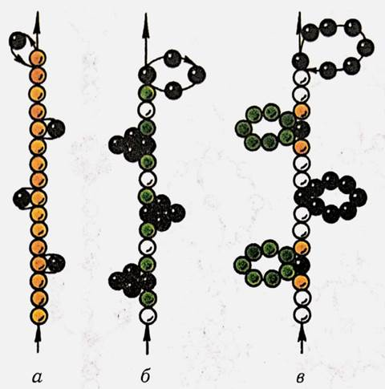
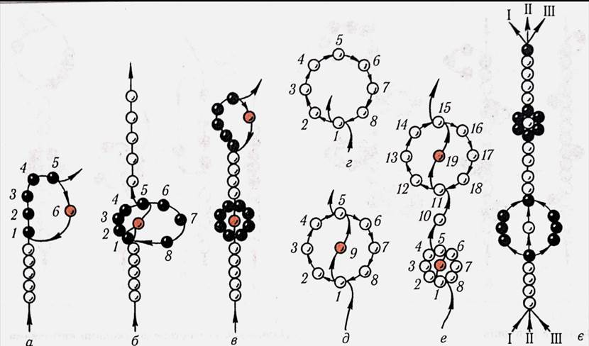
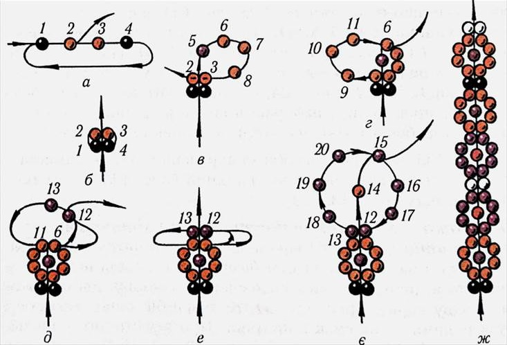
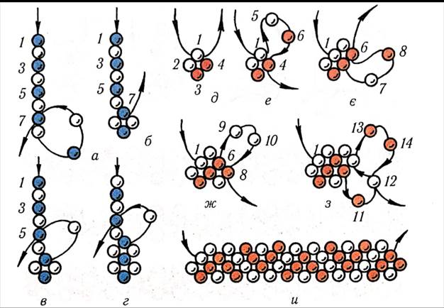
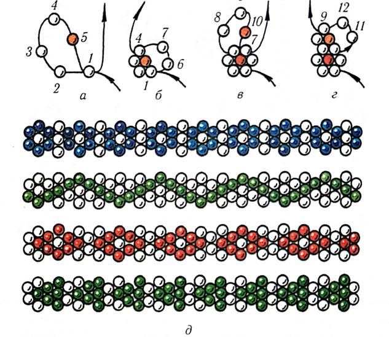

ЛАБОРАТОРНО-ПРАКТИЧНА РОБОТА
Тема: «Намисто і ланцюжки на одній нитці»
Мета: засвоєння техніки нанизування на одній нитці, формування вмінь нанизування виробів з бісеру на одній нитці, виховувати естетичний смак, повагу та любов до традицій українського народу.
Матеріали та інструменти: бісер різного розміру та кольору, капронові нитки, голки для бісеру.
Порядок виконання роботи:
- Ознайомитись з теоретичними відомостями роботи.
- Виконати завдання практичної роботи.
Теоретичні відомості:
Найпоширеніші та прості у виконанні різноманітні разки намиста й прості ланцюжки. Якщо однобарвні нитки бісеру прикрасити пупчиками, петлями, хрестиками або квіточками з кольорового бісеру, з’єднати кілька різнобарвних разків бісеру крупними намистинами, то вийде сучасне, красиве та цікаве намисто.
Ланцюжок можна прикрасити окремими квіточками з кольорового бісеру або виготовити його одноколірним. Довжина виробу залежить від його призначення: прикраса на шию, браслет, пояс або бретелі до літньої сукні.
Практична робота
Виконати вправи:
1. Пупчики (мал. 1). На вощену нитку потрібної довжини виробу набирають ряд однобарвних бісеринок та від однієї до шести бісеринок іншого кольору. Голку з ниткою протягують крізь передостанню бісеринку ряду або першу кольорову і притягують нитку (мал. 1, а-в).Утворюється пупчик, або петелька, яка прикрашає разок намиста. У такій послідовності нанизують увесь разок.

Мал.1. Варіанти пупчиків.

Мал.2. Ланцюжок із шестипелюстковими квіточками.
2. Ланцюжок із шестипелюстковими квіточками (мал. 2). Набирають перший ряд бісеринок одного кольору (5-30 шт.), а для квіточки – чотири кольорові бісеринки-пелюстки 1-4 та одну (5) іншого кольору для серединки (мал. 2, а).Пропускають голку крізь бісеринки 1-4 і притягують нитку (мал. 2, б).Набирають 2 бісеринки-пелюстки 6-7 і протягують голку з ниткою крізь бісеринки 1,5 та 4 (мал. 2, в).Затягують нитку, щоб бісеринки не провисали, і набирають новий ряд (мал. 2, г). Довжина робочої нитки має бути не менше ніж 20 см.
3. Ланцюжок із восьмипелюстковими квіточками на одній нитці . На рис. 3 показано способи прикрашання разків намиста квіточками з восьми пелюсток на одній (мал. 3, а-е) та трьох нитках (мал. 3, є).
Такий ланцюжок виконують так: на нитку завдовжки 80-100 см набирають чотири бісеринки 1-4 для початку першого й другого рядів ланцюжка: одну чорну, дві оранжеві та одну чорну (мал. 3, а).Кольори бісеринок можуть бути іншими – на смак майстрині. Протягують нитку крізь бісеринки 1, 2 і притягують її (мал. 3, б).Потім набирають одну бісеринку 5 для серединки квіточки і три 6-8 для пелюсток і протягують голку з ниткою крізь бісеринки 3 і 2 першого ряду (мал. 3, в).Закінчують квіточку трьома бісеринками 9-11, протягуючи голку з ниткою крізь бісеринку 6 (мал. 3, г).Вийшла квіточка з восьми пелюсток.
Для другої квіточки набирають дві бісеринки 12, 13 і протягують нитку крізь бісеринки-пелюстки 11, 16 першої квіточки. Притягують нитку та протягують голку з ниткою крізь бісеринку 12 (мал. 3, д, е).Знову притягують нитку і набирають наступну квіточку: одну бісеринку 14 для середини квіточки і три 15-17 для пелюсток. Протягують голку з ниткою крізь перші дві бісеринки-пелюстки 12 та 13 і притягують нитку. Для закінчення другої квіточки набирають ще три бісеринки 18-20 для пелюсток і протягують нитку крізь бісеринку-пелюстку 15. Третю і всі наступні квіточки нанизують у такий самий спосіб (мал. 3, є).
Можна зробити додатковий рядок із двох бісеринок, щоб відокремити квіточку від квіточки (мал. 3, ж).Ланцюжок бажано зробити такої довжини, щоб його можна було одягати через голову без застібки. Довгий ланцюжок, прикрашений на кінцях торочками, може бути й пояском.

Мал.3. Ланцюжок із восьмипелюстковими квіточками.

Мал.4. Ланцюжок із восьмипелюстковими квіточками на одній нитці.

Мал.5. Ланцюжок у хрестик однією ниткою.
На мал.5. показано послідовність виготовлення суцільних ланцюжків способами в один хрестик та у півтора ряди.

Мал.6. Суцільний ланцюжок у сім намистинок.
На мал.6 показано послідовність виготовлення суцільних ланцюжків у сім намистинок: а-г-послідовність виконання, д-узори.
Контрольні питання :
- Який за розміром бісер використовують для нанизування ланцюжків на одній нитці?
- Скільки кольорів бісеру доцільно використовувати для ланцюжка із восьмипелюстковими квіточками?
- В чому полягає особливість нанизування суцільних ланцюжків способами в один хрестик та у півтора ряди.